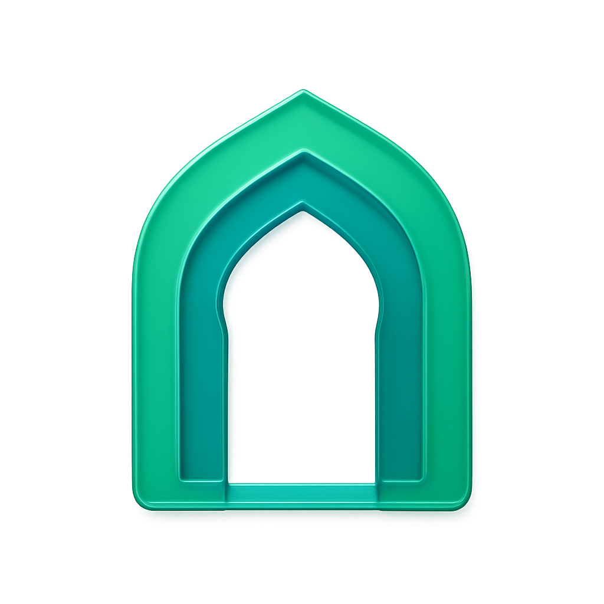
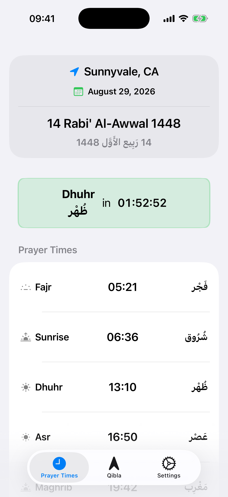
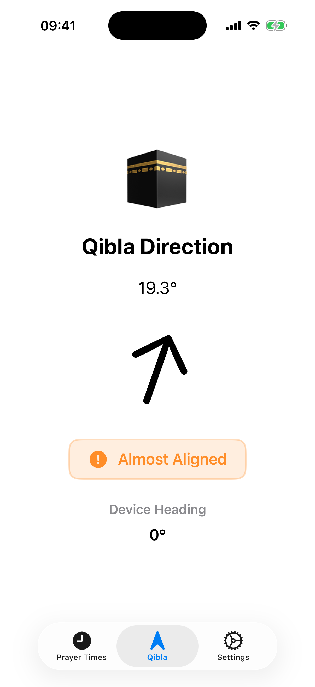
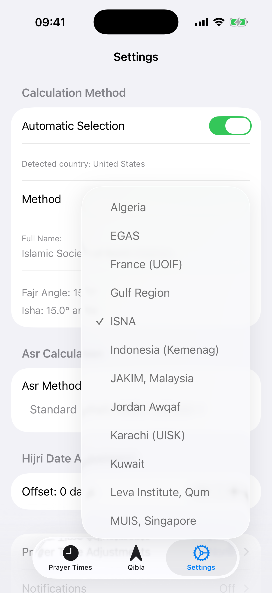
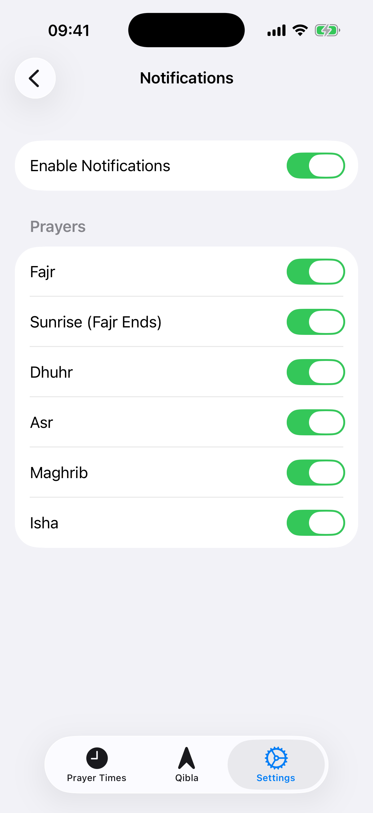
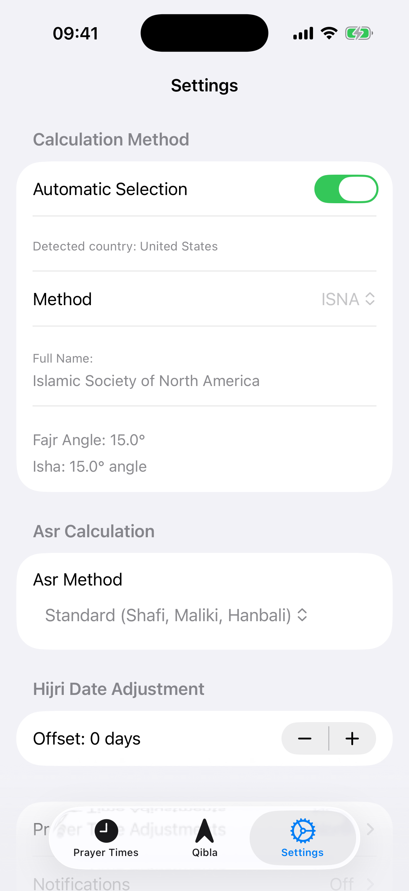
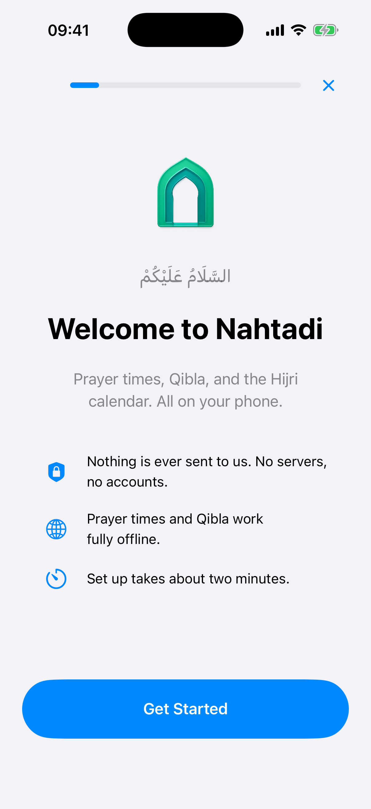

Nahtadi
Islamic Prayer Times
Accurate prayer times and Qibla direction. No ads. No tracking. Just salat.
App Preview
Six screens from the app.

Prayer Times
View all 5 daily prayer times with countdown timer and Hijri date.

Qibla Compass
Find the exact direction to Mecca using GPS and your device compass.

Calculation Methods
Choose the method your region follows.

Notifications
Turn notifications on per prayer, Fajr through Isha.

Settings
Full control over calculation methods, Asr timing, and Hijri date adjustment.

Offline Mode
Works without internet, using your last known location.
Why Nahtadi?
Most prayer apps are free because you are the product. Nahtadi isn’t.
No Ads
Zero interruptions during salat.
No Data Collection
Nothing leaves your device.
One-Time Purchase
$3.99Pay once. No subscriptions.
Works Offline
Calculated on-device, anywhere.
Muslim-Built
By a Muslim developer, for the Ummah.
Everything You Need for Salat
Prayer times, Qibla, Hijri dates, and notifications. All of it on your device.
5 Daily Prayer Times
Accurate calculations for Fajr, Dhuhr, Asr, Maghrib, and Isha using astronomical algorithms.
Qibla Direction
Points to the Kaaba in Mecca from anywhere in the world, using your device compass.
Hijri Calendar
Hijri and Gregorian dates together, with a converter for any date.
Prayer Notifications
A reminder for each prayer, switched on or off individually.
Fully Offline
Calculated on your device. No internet connection required.
Works Worldwide
Works at any latitude, with adjustments beyond 48.5 degrees north or south.
Multiple Calculation Methods
ISNA, MWL, UQU, EGAS, and more. Pick the method your region follows.
Privacy First
All data stays on your device. No tracking and no data collection.
Frequently Asked Questions
Why isn’t it free?
Many prayer apps are free because they make money from ads and your data. Your worship should not be a revenue stream. Nahtadi is a one-time $3.99 purchase: no ads, so there is nothing to gain from tracking you, and no subscription prompts arriving in the middle of salat.
Is my data safe?
Yes. Nahtadi collects zero personal data. Your location, settings, and preferences stay on your device. There are no analytics, no third-party trackers, and no accounts to create.
Does it work without internet?
Prayer times are calculated on your device using astronomical algorithms, so Nahtadi works offline anywhere in the world once installed.
Which calculation methods are supported?
Nahtadi supports the major calculation methods: ISNA (North America), Muslim World League (MWL), Umm al-Qura (UQU, Saudi Arabia), the Egyptian General Authority (EGAS), and others. It also applies high-latitude adjustments beyond 48.5 degrees north or south, where the standard methods can fail during certain seasons.
Nothing leaves your device.
Nahtadi collects nothing and transmits nothing. Your data stays on your device.
Privacy Policy
What Nahtadi stores, what it never sends, and how to revoke location access.
Read Privacy PolicyApp Support
Setup, calculation methods, notifications, and how to reach me.
Get SupportQuestions or feedback?
support@hendaseh.com